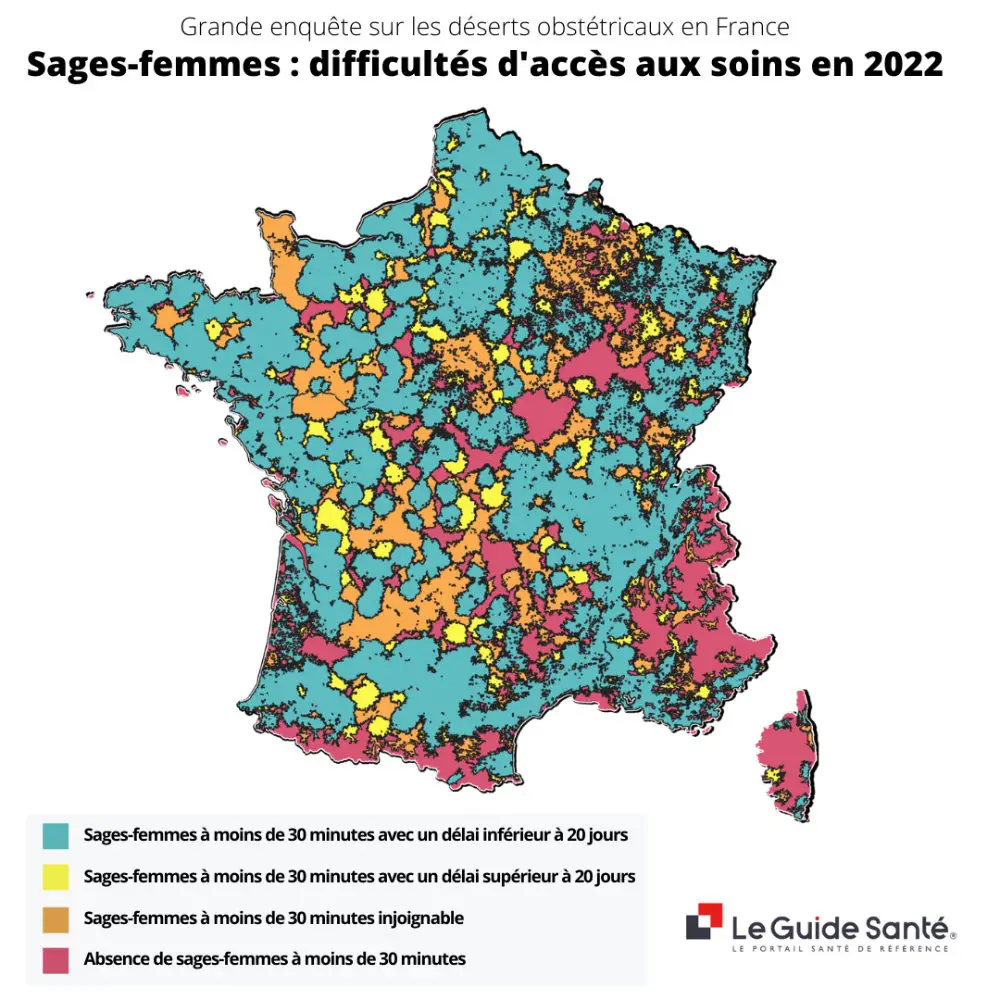
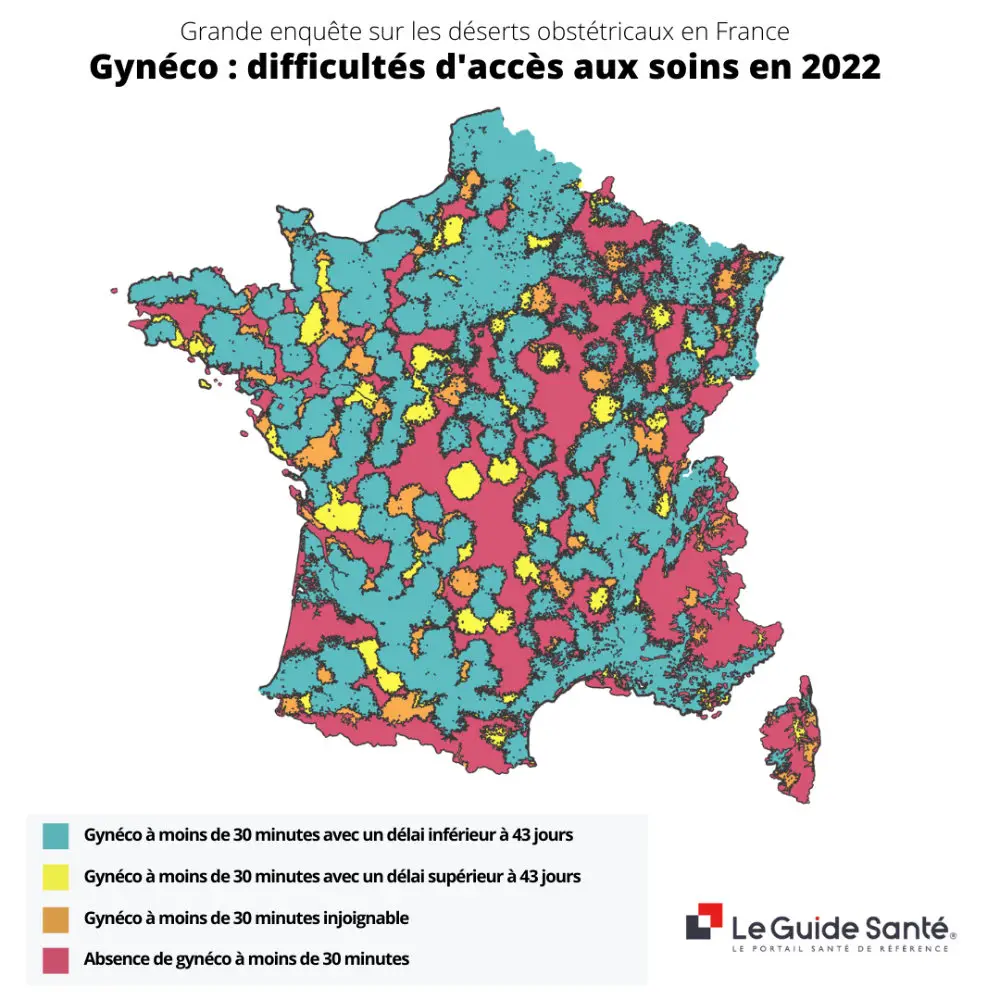

Enquête exclusive sur les déserts obstétricaux : l'avenir de la France en danger ?

Les déserts médicaux, et plus particulièrement ici les « déserts obstétricaux », sont des zones dans lesquelles l'accès aux services de soins de maternité est limité (faible accessibilité) ou inexistant, soit par manque de services, soit par des obstacles à la capacité d'une femme (future maman) à accéder à ces soins, ce qui augmente le risque obstétrical.
Dans notre enquête exclusive sur les déserts obstétricaux 2022, nous mettons en lumière l'inégalité d'accès aux soins de maternité en France métropolitaine. L'accès à des soins de maternité de qualité est un élément essentiel de la santé maternelle et des résultats positifs à la naissance, en particulier au regard des taux de mortalité maternelle et de morbidité maternelle.
Rappelons que, « le rapport de l'enquête nationale confidentielle sur les morts maternelles (ENCMM) publié par Santé Publique France et l'Inserm en janvier 2021, fait état de 262 décès maternels sur la période 2013-2015, soit 1 décès tous les 4 jours en France d'une cause liée à la grossesse, à l'accouchement ou à leurs suites. ». [1]
Comme pour toutes les grandes enquêtes menées par les équipes de la plateforme Le Guide Santé, notre nouvelle enquête sur les déserts obstétricaux s’appuie sur une méthodologie méticuleuse avec des bases de données récentes et fiables. En plus des résultats de cette enquête, nous proposons plusieurs outils pratiques dont un moteur de recherche géolocalisé pour connaitre le niveau de difficulté d'accès aux soins en obstétrique d’une municipalité, ainsi que nos services gratuits de prise de rendez-vous (Doc Le Guide Santé® et Vite Mon RDV®).
Méthodologie de l’enquête sur les déserts obstétricaux en France
Moteur de recherche géolocalisé
Connaître la difficulté d'accès aux soins en obstétrique de chaque commune
Téléchargez ici le code pour insérer le Moteur de recherche sur votre site.
Découvrez aussi nos outils pratiques, rapides et gratuits de prise de rendez-vous auprès des professionnels de la santé en France, l'application mobile Doc Le Guide Santé® et la plateforme Vite Mon RDV®.

Analyse des chiffres et cartes sur les déserts obstétricaux en France

Plus de 10% de la population à plus de 30 minutes d’une maternité
Dès lors, on constate que 6 784 973 personnes (11 826 communes de France) se trouvent dans une zone à plus de 30 minutes d’une maternité, soit un peu plus de 10% de la population.
Ensuite, l’analyse des chiffres de l’enquête montre que :
- 1 316 842 personnes (3 919 communes) se trouvent dans un désert obstétrical (selon notre définition), avec 3 niveaux de difficulté aux soins obstétricaux ;
- 4 997 810 personnes (8 315 communes) se situent dans des zones avec 2 niveaux de difficulté d’accès aux soins obstétricaux ;
- 9 438 766 personnes (9 167 communes) se trouvent dans des zones avec 1 niveau de difficulté d’accès aux soins obstétricaux ;
- 49 088 206 personnes (13 467 communes) se situent dans une zone sans aucune difficulté d’accès aux soins obstétricaux.
Ainsi, il y a un cumul de 15 753 418 de personnes qui se trouvent au moins avec 1 difficulté d’accès aux soins, soit prêt d’un quart de la population en France. Au niveau des régions, il y a des disparités importantes avec des extrêmes pour la Corse, où 76,29% de la population à au moins une difficulté d’accès aux soins, et a contrario 1,7% de la population en Ile-de-France à au moins 1 difficulté d’accès aux soins.
A posteriori, il y a 3 régions où l’on a entre 40% et 50% avec au minimum 1 difficulté d’accès aux soins : Pays de Loire, Centre-Val de Loire et Bourgogne-Franche-Comté. Après, quelques exemples de villes moyennes comme Laval (département de la Mayenne en région des Pays de la Loire), où il est impossible d’accéder à une sage-femme et un gynécologue par téléphone pour une ville de 50 000 habitants. Un certain nombre de villes, accueillant entre un peu moins de 15 000 et 30 000 habitants, comme Cognac (Charente), Menton (Provence-Alpes-Côte d'Azur), Royan (Nouvelle-Aquitaine), Saint-Dizier (Grand Est), Longwy (Grand Est) ou Abbeville (Hauts-de-France), se situent avec 2 difficultés d’accès aux soins. De plus, découvrez en détail l'ensemble des autres résultats pour toutes les villes de France métropolitaine grâce à notre moteur de recherche géolocalisé.


Moteur de recherche géolocalisé
Connaître la difficulté d'accès aux soins en obstétrique de chaque commune
Téléchargez ici le code pour insérer le Moteur de recherche sur votre site.
Enfin, le nombre de naissances en France a chuté depuis ces dix dernières années, puisque nous sommes passés de 823 394 naissances en 2011, pour atteindre 738 000 naissances en 2021 ; avec un léger rebond en 2021 par rapport à 2020 (3 000 naissances supplémentaires). [4]
Actuellement, le taux de natalité pour 1 000 habitants est de 10,9 naissances vivantes, et le taux de fécondité est en baisse avec un taux de 1,87 naissance par femme, ceci étant en partie lié vieillissement de la population.
Ce constat révèle notamment qu’il y a un enjeu politique et économique sur le territoire français, avec des points de commentaires et d’analyses importants sur les disparités régionales et les différences notoires avec les grandes et petites agglomérations.
Dans ce panorama, on se retrouve avec près de 10% de la population avec un problème d’accès à une maternité, et une véritable difficulté pour accéder à une sage-femme ou un gynécologue.
A ce jour, les alternatives qui semblent intéressantes sont les « Maisons de naissance » (ou centres de naissance), qui sont encore trop peu présentes. « Le projet de loi de financement de la Sécurité sociale 2021 a pérennisé les huit maisons de naissance existantes, et lancé l’ouverture de douze nouvelles ». [5]
Pour précision, « les Maisons de naissance sont des structures autonomes qui, sous la responsabilité exclusive de sages-femmes, accueillent les femmes enceintes dans une approche personnalisée du suivi de grossesse jusqu’à leur accouchement, dès lors que celles-ci sont désireuses d’avoir un accouchement physiologique, moins médicalisée et qu’elles ne présentent aucun facteur de risque connu. » [6]
En conclusion, bien entendu il n’y a pas une recette miracle à ce jour pour ce problème de santé publique dans le domaine de l'obstétrique. Mais parmi les solutions rapides et cohérentes pour endiguer les déserts obstétricaux, il semble évident de devoir augmenter le nombre des sages-femmes en formation.
Aussi, pour ce qui est des gynécologues-obstétriciens, il faudra attendre au moins une génération ! A moins de faciliter les démarches et d’ouvrir l’accès à des professionnels de la santé venus de pays étrangers et déjà formés – ce qui semble être pour l’heure actuelle, l'une des meilleures solutions à envisager.
Gageons que ce sujet de santé publique à la mode dans les programmes des candidats en lice à l’élection présidentielle, ne soit pas qu'un effet d'annonce, mais bien suivi d'une forte mobilisation et d'actes concrets.
Sources
- « Mortalité maternelle : en France, 1 femme meurt tous les 4 jours. 2021. » https://www.lamaisondesmaternelles.fr/
- « Accès aux soins : pourquoi et comment identifier les zones sous-denses en médecins ? Dans les zones sous-denses en médecins, les praticiens peuvent bénéficier d’aides à l’installation et au maintien de la part de l’État, de l’assurance maladie ou encore des collectivités territoriales. Ce sont les agences régionales de santé (ARS) qui déterminent ces zones sous-denses, à partir d’une méthodologie nationale actualisée en octobre 2021. » (communes hors aires urbaines, couronne des grands pôles,...). https://solidarites-sante.gouv.fr/professionnels/zonage-medecin
- « Déserts médicaux : état des lieux et solutions. » https://www.le-guide-sante.org/actualites/sante-publique/deserts-medicaux-etat-des-lieux-solutions
- « Naissances et taux de natalité. Données annuelles de 1982 à 2021. https://www.insee.fr/
- « Accouchement « naturel » : L’ouverture de nouvelles maisons de naissance, un sujet encore polémique. » https://www.20minutes.fr/
- « Les maisons de naissance. 03.03.22. Établissements de santé, sociaux et médico-sociaux. Organisation des soins. » https://solidarites-sante.gouv.fr/
Ressources
- Qualité et sécurité des soins dans le secteur de naissance (risque obstétrical,...). https://www.has-sante.fr/
- Rapport de la DREES. Enquête nationale périnatale 2016. Étude la DREES sur les naissances et les établissements, situation et évolution depuis 2010. https://drees.solidarites-sante.gouv.fr/
- Prise en charge du travail normal (gynécologie-obstétrique). Par Raul Artal-Mittelmark, MD, Saint Louis University School of Medicine. 2021. https://www.msdmanuals.com/
- Les cahiers. Infirmiers, Gynécologie, Obstétrique. Accouchement : prise en charge des parturientes. (Signes cliniques, surveillance clinique maternelle, surveillance fœtale, etc.). Par Alexandre Vivanti et Alexandra Benachi. 2021. https://www.elsevier.com/
- Périnatalité (risque obstétrical,...). Ministère des Solidarités et de la Santé. 2021. https://solidarites-sante.gouv.fr/